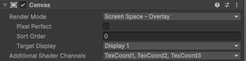

Canvas Setup
Additional shader channels for the Shader resolver.
The Shader resolver passes its per-image data through the vertex channels TexCoord1, TexCoord2 and TexCoord3. The Canvas that draws the image must have them switched on, or the image will not draw.
Fix it
- From the image: select the
VectoriaImage. When channels are missing, the inspector shows a warning with a Fix Canvas Channels button. Press it. - On the Canvas: select the Canvas, open Additional Shader Channels and tick TexCoord1, TexCoord2 and TexCoord3.
- In code:
image.FixCanvasChannels().image.CanvasChannelsOktells whether they are set.

If the channels are missing, a warning is also logged. The MeshBatch resolver needs none of this, so it is a quick way to check whether a missing channel is why an image does not draw.